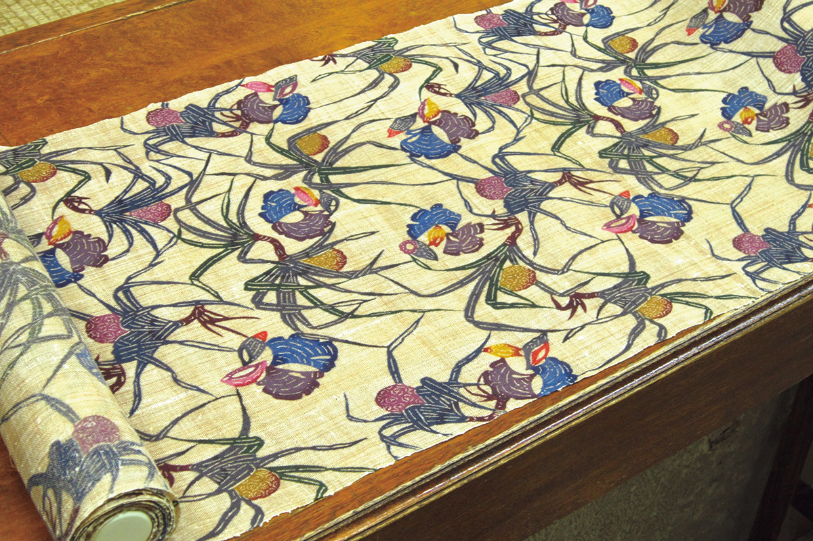
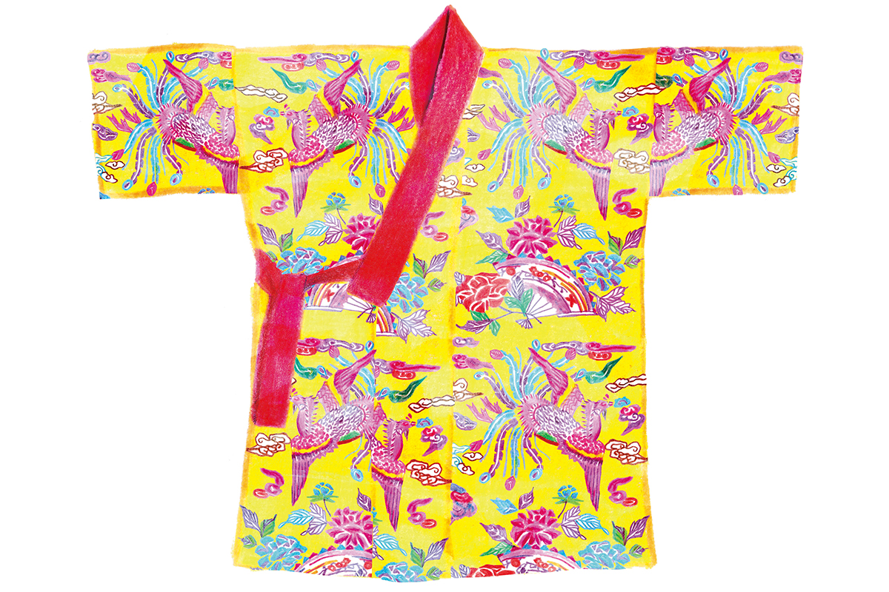
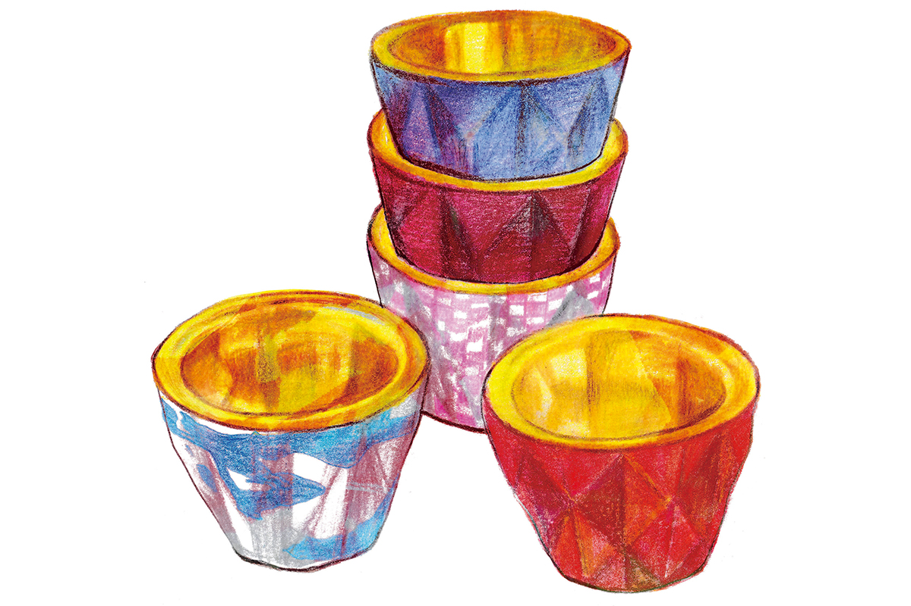
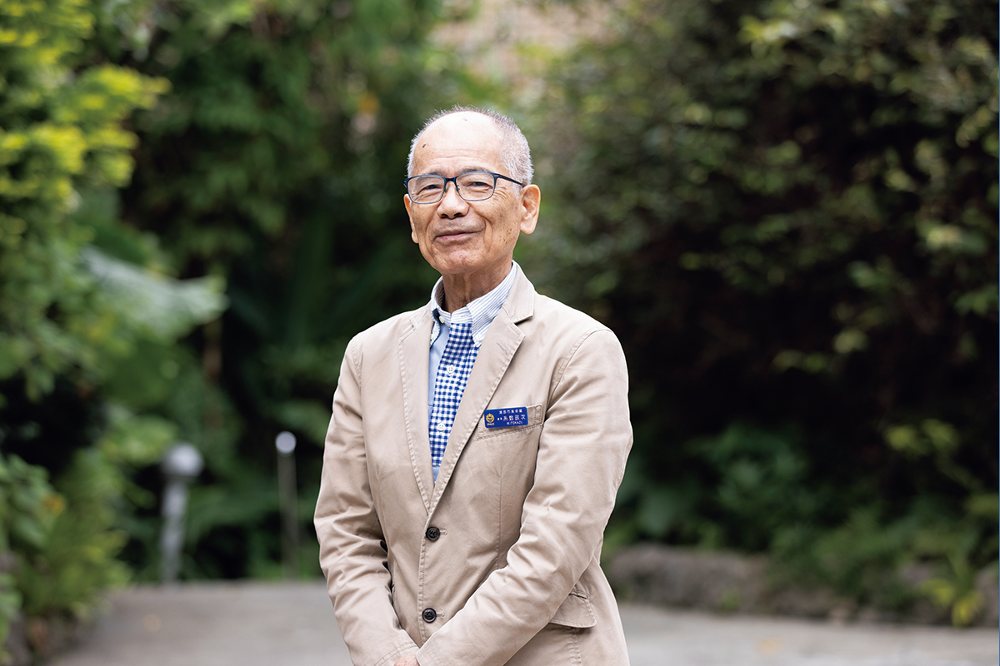
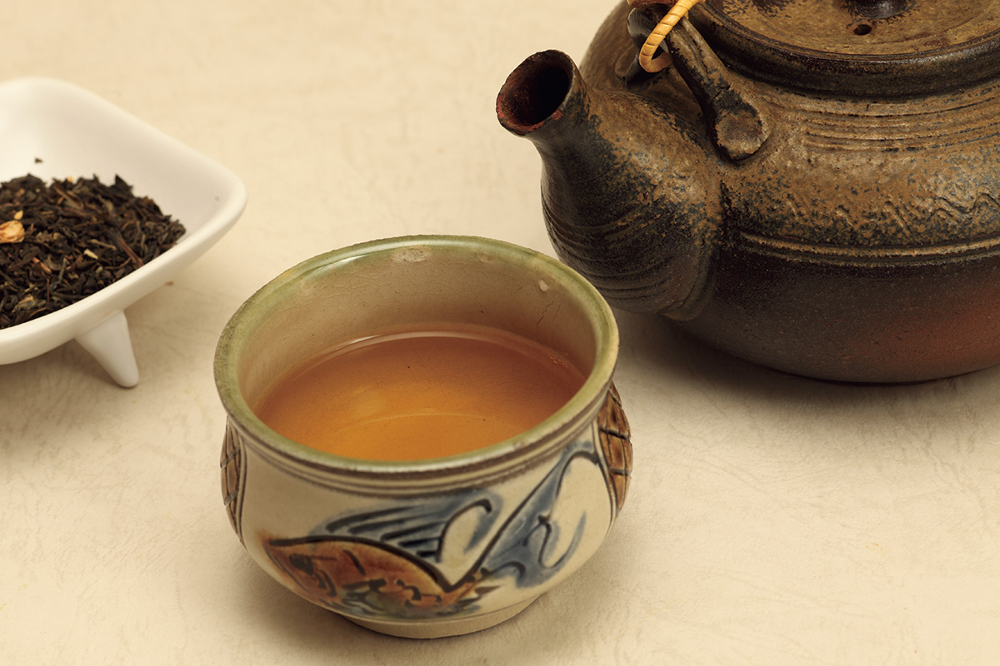
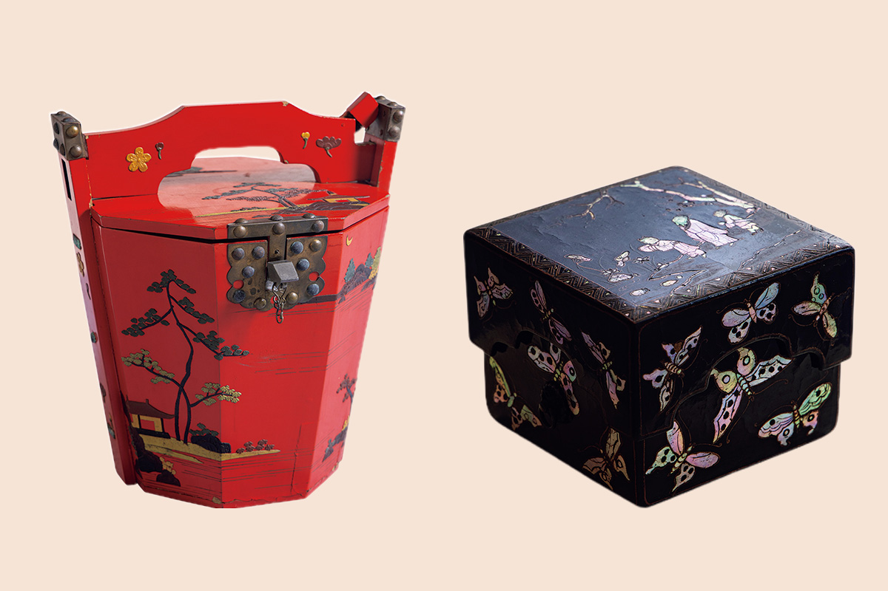
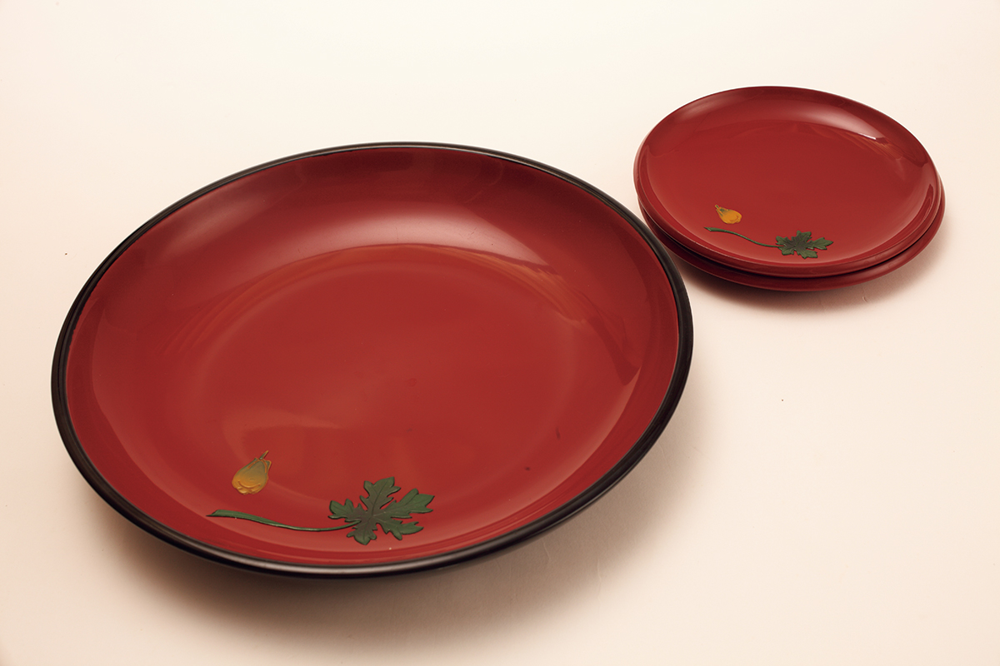

Префектура Окинава · Наха, Хаэбару, Ёмитан · ремёсла
Ремёсла Окинавы: королевская бингата, рюкюский лак и мастерские, куда стоит заехать

Королевство Рюкю простояло около 450 лет, и его мастера оставили после себя ткани, керамику и лак, которые делают до сих пор. Журналистка, живущая на Окинаве с 1986 года, рассказывает, куда отвезти друга, любящего ремёсла, а директор художественного музея Урасоэ объясняет, чем особен рюкюский лак.
Маршрут
Ремёсла, которые затягивают
Автор этого маршрута приехала на Окинаву в 1986 году, работала журналистом на телевидении и снимала документальное кино о тонбян, почти исчезнувшей рюкюской ткани. За тридцать с лишним лет на острове её всё сильнее увлекают вещи, сделанные руками. Окинавские ремёсла бездонны, повторяет она друзьям, даже рискуя им надоесть. Вот несколько мест, которые она показывает гостям.
Музей истории города Наха
Музей небольшой, но впечатляет размахом. В его фондах хранятся вещи королевской семьи Рюкю, среди них много национальных сокровищ, и если повезёт с выставкой, можно увидеть корону и одежды короля. Её любимый экспонат: одеяние из бингата с крупными фениксами и пионами на жёлтом фоне. Жёлтый цвет при дворе Рюкю носила только королевская семья.

Музей истории города Наха
- Адрес
- префектура Окинава, Наха, Кумодзи, 1-1-1, торговый центр «Палетт Кумодзи», 4-й этаж
- Телефон
- +81 98-869-5266
- Часы работы
- 10:00–19:00
- Выходные
- четверг, новогодние праздники, иногда другие дни
«Касури-роуд» в Хаэбару
В городке Хаэбару к югу от Нахи есть улица «Касури-роуд». На её стенах нарисованы и вставлены в кладку узоры касури, рюкюской ткани с рисунком из заранее окрашенных нитей. Среди них «туигуа», то есть «птичка», и гулять здесь интересно, разглядывая каждый узор по очереди.
На этой улице стоит ткацкая мастерская Косиро Осиро, которая после войны возродила рюкюские касури. Обязательно загляните в магазин на первом этаже: там, словно между делом, выставлено кимоно из тонбян. Эту ткань сегодня называют «призрачной»: её никто больше не ткёт, и даже из чего её делали, толком неизвестно. По прозрачному белому полотну идёт узор, окрашенный рюкюским индиго, и вещь выглядит строго и благородно.
Ткацкая мастерская Косиро Осиро
- Адрес
- префектура Окинава, уезд Симадзири, Хаэбару, Мотобу, 175
- Телефон
- +81 98-889-3563 (факс)
- Часы работы
- 9:00–17:00
- Выходные
- суббота, воскресенье, праздники
Новое
Окинава не только традиция
«Имамура дзиккэнсицу» в Итомане
В городе Итоман на юге острова керамист Ёсиаки Имамура работает в мастерской, название которой переводится как «Лаборатория Имамуры». Его вещи остры и не похожи ни на чьи. Глазурь, стекающая в жару печи, сама рисует форму, и становится ясно, что керамика это союз огня и глины. Чашку только для того, чтобы вкуснее пить эспрессо, он делал два года, и вышла очень изысканная вещь с рисунком, напоминающим твид Chanel. Посуда в мастерской будто пришла из средневековой Европы. О днях, когда мастерская открыта для гостей, мастер сообщает в Instagram.

«Имамура дзиккэнсицу»
- Адрес
- префектура Окинава, Итоман, Итоман, 989-26
- Как добраться
- о посещении нужно договориться заранее через Instagram
HIZUKI в Ёмитане
Стекло Мийо Оябу холодное, чувственное, и в нём будто спрятана страсть. Увидеть его лучше всего в HIZUKI, стильном магазине, которым она руководит, в деревне Ёмитан. Посуда ловит и отражает свет, и в своей тишине кажется прозрачным «чем-то», в котором скрыта сила. Маленькие вазочки на один цветок и пресс-папье, похожие на застывшие капли стекла, притягивают, как украшения. Это окинавское стекло, но совсем не то, что привычное рюкюское.
HIZUKI
- Адрес
- префектура Окинава, уезд Накагами, Ёмитан, Токэси, 273
- Телефон
- +81 98-958-1334
- Часы работы
- 10:00–17:00
- Выходные
- воскресенье
Сиса из Studio de-jin в Сюри
На Окинаве сиса сидят повсюду: на красной черепице, у въезда в деревню, у дверей домов и на столбах ворот. Это львы-хранители острова. «Раньше их лепили плотники, которые строили дом, поэтому у каждого свой характер», объяснил автору маршрута друг, и с тех пор ей нравится разглядывать морды сиса на улицах.
Настоящий сиса тяжеловат для сувенира. Поэтому гостям она советует Studio de-jin в Сюри: там продают каменных львов размером с ладонь. Каждого вырезает скульптор Дайти Вакаяма из пористого рюкюского известняка. Круглые, добродушные, очень обаятельные хранители. Выберите того, чей взгляд вам по душе, и увезите домой, говорит она друзьям.
Studio de-jin
- Адрес
- префектура Окинава, Наха, Сюри, Тэра-тё, 1-2, 1-й этаж
- Телефон
- +81 98-887-7466
- Часы работы
- 10:00–18:00
- Выходные
- воскресенье, иногда другие дни
Наследие
Шестнадцать ремёсел Рюкю

О традиционных ремёслах острова рассказывает директор художественного музея Урасоэ. Он мастер лака, учился у художника, работал над окинавской статуей Молитвы о мире, преподавал технику лака в префектуральном центре ремёсел, был профессором Окинавского префектурального университета искусств и возглавляет музей с 2022 года.
На Окинаве 16 ремёсел признаны государством традиционными: 13 видов тканей, рюкюский лак, керамика Цубоя и сансин. Большинство выросло из приёмов, пришедших с торговлей во времена королевства Рюкю, и развивалось в разных краях острова по-своему. Эти навыки бережно передают до сих пор.
Среди крашеных тканей главная бингата. Ткачество в каждом краю своё: на севере острова Окинава басёфу из волокна банана, в центре цветные «ханаори» из Ёмитана, на юге рюкюские касури. Есть ещё кумэдзима-цумуги с острова Кумэдзима, мияко-дзёфу с Мияко, яэяма-минса и ёнагуни-ори.
Керамика Цубоя ведёт отсчёт с 1682 года, когда королевское правительство свело три печи в нынешний квартал Цубоя. Её делят на «дзёяти», покрытую глазурью посуду на каждый день, и «араяти», большие кувшины и сосуды без глазури.

Лак
Замок Сюри как огромная лаковая шкатулка
Замок Сюри покрыт лаком почти везде, поэтому его называют огромным изделием рюкюского лака. Замок сгорел в 2019 году, и его восстанавливали заново. «В восстановлении Сюри участвовали мастера лака с Окинавы, и для передачи ремесла это хорошая возможность», говорит директор. В прошлый раз, когда замок восстанавливали в конце XX века, лаком его покрывали мастера с других островов Японии. На этот раз работало много молодых окинавских мастеров, и от этого ждут нового подъёма рюкюского лака.
Рюкюский лак появился примерно в XIV веке. При королевстве под началом особого ведомства «Кайдзури бугёсё» делали лаковые вещи для подношений Китаю и Японии, и мастерство постепенно оттачивалось. Лак твердеет, соединяясь с влагой воздуха, и ему нужны влажность около 80% и температура выше 20 градусов. Жаркая и влажная Окинава для этого подходит идеально.

Особая местная техника называется «цуйкин». Обожжённый лак смешивают с пигментом и вымешивают в массу, раскатывают её тонко, вырезают узор и наклеивают на изделие, так что рисунок становится рельефным.
«Цуйкин есть только в рюкюском лаке. В других местах масса для цуйкин просто не высыхает»
директор художественного музея Урасоэ

Зато сильное окинавское солнце лаку враг. Чтобы защитить замок Сюри, поверх лака наносят слой тунгового масла, и всё равно мастера по плану будут обновлять покрытие каждые пять лет.
«Важно не только реставрировать, но и делать лаковые вещи и продавать их. Молодые мастера придумывают новый дизайн и удобную посуду. Лучшая поддержка для рюкюского лака, если вы будете им пользоваться»
директор художественного музея Урасоэ
Фото: Хитоми Иха (иллюстрации), Юкико Сираки, OCVB.